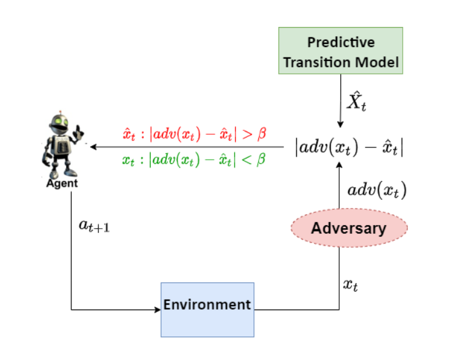
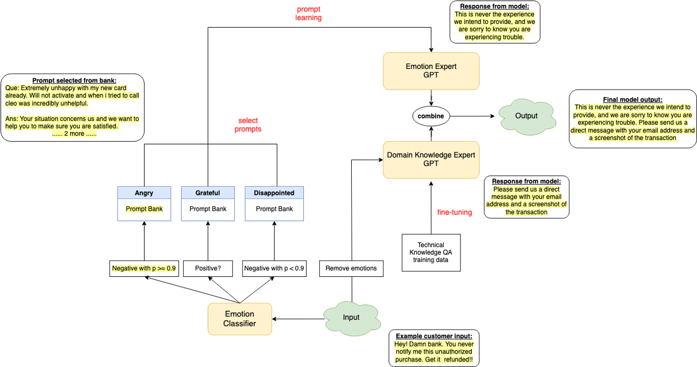
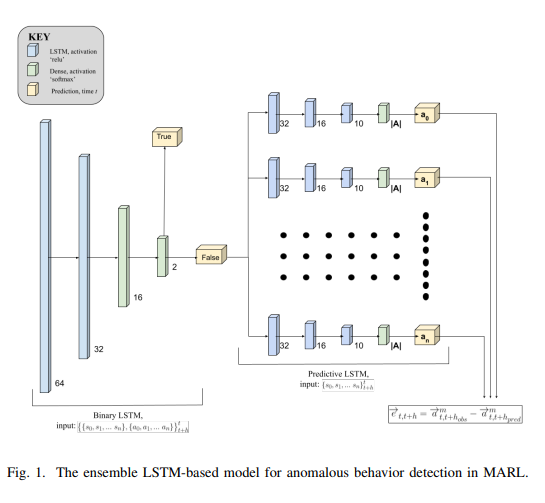
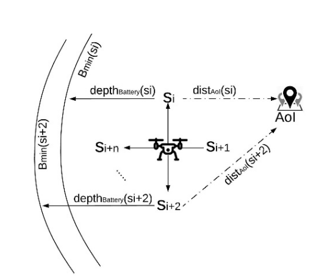
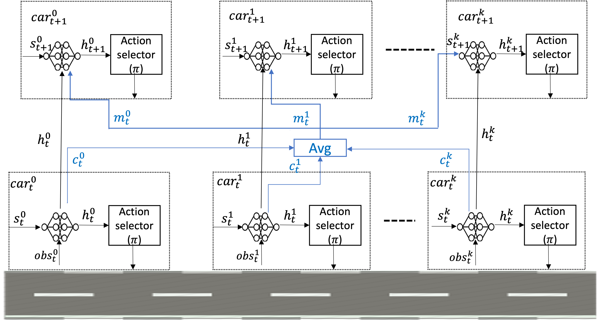

|
Tongtong (Frank) Liu
I am a senior undergraduate student at Wake Forest University, pursuing a double major in Computer Science and Mathematical Business.
I am also an undergraduate researcher advised by Dr. Sarra Alqahtani and worked as an research intern at IBM Research mentored by Dr. Mu Qiao in summer 2022.
My major research interest lies in robustness and security of Reinforcement Learning, explainable Reinforcement Learning (XRL), and Foundation Language Model in Natural Language Processing.
Beside from research, I have also interned in various technology companies like ByteDance (TikTok), IBM, DataMimo, and Mesoor AI. I have industrial expereince in Software Deveopler Engineering and Machine Learning Engineering. I co-founded The Wakers , an information platform for international students. I am an innovative problem-solver and an inspiring team player.
Please get in touch with me! I am happy to talk about any of my past experience :)
Email /
LinkedIn /
GitHub
|
|
Awards
- PI, CRII: RI: Secure Multi-Agent Reinforcement Learning Algorithms, NSF, 2021
- Wake Forest Research Fellowship, 2021
- Burke M. McConnell Management Excellence Scholarship, 2022
|
|
Research
My research interests lies in different topics of Machine Learning, including data mining, Foundation Model based chatbot system in NLP, and security, safety, and robustness of Reinforcement Learning.
Some projects are funded by National Science Foundation
|
|

|
Safe Reinforcement Learning via Observation Shielding
Joe McCalmon, Tongtong Liu , Reid Goldsmith, Andrew Cyhaniuk, Talal Halabi, Sarra Alqahtani
HICSS, 2022
We proposed a method called observation-shielding RL (OSRL) to increase the robustness of RL against large perturbations using predictive models and threat detection. OSRL builds on the idea of model predictive shielding, where an observation predictive model is used to override the perturbed observations as needed to ensure safety.
|
|

|
GPT Powered Empathetic Chatbot for Financial Customer Services
Tongtong Liu , Mu Qiao, Divyesh Jadav
IBM Research Internship, 2022
We proposed a novel mixture of expert method that combines few-shot learning and model fine-tuning on the SOTA foundation model decoder --- GPT --- to build a customer service chatbot that can respond to offensive customer complaints in a professional and empathetic way. Current foundation model powered chatbot performed poorly in aggresive input, which is a common scenario in customer service domain, and there are no GPT application that blend two different skills together in one model.
|
|

|
LSTM-Based Anomalous Behavior Detection in Multi-Agent Reinforcement Learning
Cameron Lischke, Tongtong Liu , Joe McCalmon, Md Asifur Rahman, Talal Halabi, Sarra Alqahtani
IEEE CSR, 2022
We present a novel stacked-LSTM ensemble approach to detect a serious vulnerability in Multi-agent Reinforcement Learning system, compromised agent attack, which one of the agent in the team is controlled by an attacker to subsequently pushes its cooperative agents to act off-policy.
|
|

|
Robustness-driven Exploration with Probabilistic Metric Temporal Logic
Xiaotian Liu, Pengyi Shi, Tongtong Liu , Sarra Alqahtani, Paul Pauca, Miles Silman
ICAART, 2021
The ability to perform autonomous exploration is essential for unmanned aerial vehicles (UAV) operating in unknown environments where it is difficult to describe the environment beforehand. Algorithms for autonomous exploration often focus on optimizing time and full coverage in a greedy fashion that collect irrelevant data and wastes time navigating areas with no important information. In this paper, we aim to improve the efficiency of exploration by maximizing the probability of detecting valuable information
|
|

|
Multi-Agent Reinforcement Learning for Cooperative Adaptive Cruise Control
Joe McCalmon, Ashley Peake, Benjamin Raiford, Tongtong Liu , Sarra Alqahtani
ICTAI, 2020
A growing trend in the field of autonomous vehicles is the use of platooning. The design of control algorithms for platoons is challenging considering that coordination among vehicles is obtained through diverse communication channels. In this paper, we propose a multi-agent reinforcement learning approach for autonomous vehicles which communicate in a platoon formation.
|
|
Courses
Computer Science
- CSC111: Introduction to Computer Science - A - Fall 2019
- CSC112: Fundamentals of Computer Science - A - Spring 2020
- CSC201: Data Structures and Algorithms - A - Fall 2020
- CSC231: Programming Languages - A - Spring 2021
- CSC250: Computer Systems I - A - Fall 2020
- CSC251: Computer Systems II - A - Fall 2021
- CSC301: Algorithm Design and Analysis - A - Spring 2021
- CSC321: Database Management Systems - A - Spring 2022
- CSC343: Internet Protocols - A - Spring 2022
- CSC373: Data Mining - A - Fall 2021
- CSC391: Selected Topic: Security and Trustworthiness of AI - A - Spring 2021
- CSC391: Selected Topic: Cloud Computing - A - Spring 2022
- BEM251: Management Information Systems - A - Spring 2022
Mathematics and Statistics
- AP Credits: MST111: Calculus I
- AP Credits: MST112: Calculus II
- AP Credits: STA111: Elementary Probability&Stats
- MST113: Multivariate Calculus - In-progress - Fall 2022
- MST117: Discrete Mathematics - A - Spring 2020
- MST121: Linear Algebra - A - Fall 2019
- MST253: Operations Research - A - Fall 2021
- STA212: Statistical Models - A - Spring 2020
- STA310: Probabilities - A - Spring 2022
- STA363: Intro to Statistical Learning - In-progress - Fall 2022
|
|
{kind=link}